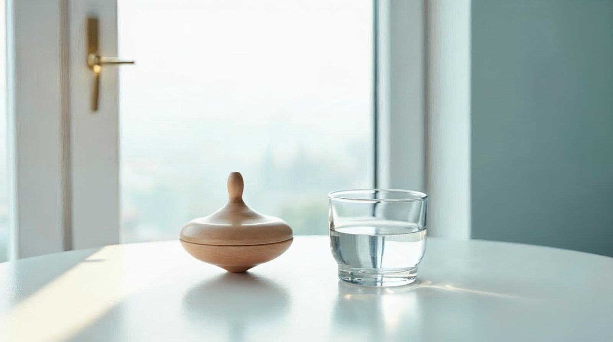
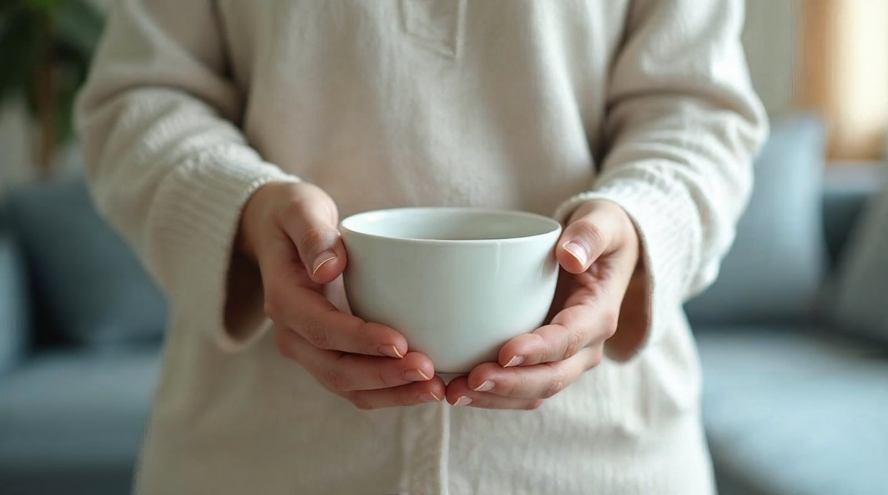
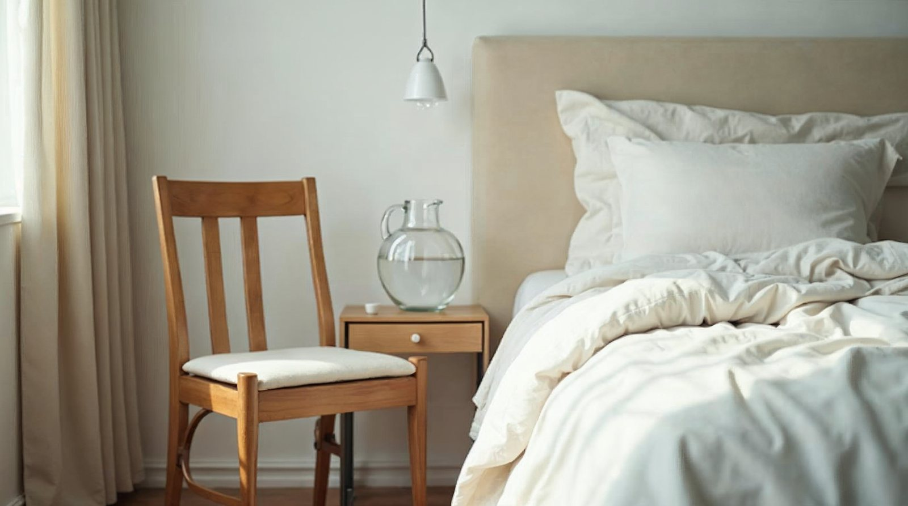

이종호 한의사 감수좋은꿈참사랑한의원 대표원장 (한의사 면허번호 19769)발행 2026-11-23 · 수정 2026-11-26
이 글의 차례
- 세 가지 어지럼, 이렇게 나눠 보세요
- 왜 이런 불편이 생길 수 있나요
- 왜 고개를 돌릴 때만 어지러운 걸까요
- 잠과 식사, 긴장은 어지럼과 어떻게 이어지나요?
- 함께 오는 증상은 어떻게 적으면 될까요?
- 먼저 이렇게 여쭙니다
- 예를 들면 이런 상황입니다
- 스스로 점검해 보세요
- 일상에서 먼저 해 볼 수 있는 것
- 어지러울 때 그 자리에서는 이렇게 해 보세요
- 먹는 약과 어지럼은 관련이 있을 수 있나요?
- 한의원에서 함께 살필 수 있는 경우
- 첫 방문은 이렇게 진행됩니다
- 다시 오시면 무엇을 여쭙나요?
- 얼마나 지켜보고 언제 상담할까요
- 이렇게 기록해 오시면 상담이 쉬워집니다
- 이런 증상은 먼저 확인이 필요합니다
어지럽다는 말은 사람마다 다른 느낌을 가리킵니다. 같은 단어라도 빙빙 도는지, 아찔한지, 휘청이는지 나눠 말하면 어떤 확인이 먼저 필요한지 훨씬 정확하게 판단할 수 있습니다.
진료실에서 어지럼 이야기를 들을 때 저는 "그 순간 눈을 뜨고 있으면 방이 움직였나요, 아니면 내 몸이 꺼지는 것 같았나요?"라고 여쭙곤 합니다. 이 질문 하나에 대한 답만으로도 이야기의 방향이 꽤 달라집니다.
세 가지 어지럼, 이렇게 나눠 보세요
- 빙빙 도는 어지럼: 가만히 있는데 천장이나 벽이 한쪽으로 도는 것처럼 보입니다. 눈을 감아도 도는 느낌이 남고, 메스꺼움이 함께 오는 경우가 많습니다.
- 아찔한 어지럼: 눈앞이 하얘지거나 캄캄해지며 힘이 쭉 빠지는 느낌입니다. 쓰러질 것 같지만 주변이 돌지는 않고, 앉거나 누우면 금세 가라앉는 경우가 많습니다.
- 휘청이는 어지럼: 걸을 때 몸이 흔들리고 발밑이 푹신한 느낌입니다. 배 위에 서 있는 것 같다고 표현하시는 분도 있습니다.
말로 옮기면 "세상이 돌아요", "핑 돌면서 눈앞이 깜깜해요", "걸을 때 술 취한 것처럼 흔들려요"에 가깝습니다. 어느 문장이 가장 비슷한지 골라 주시면 됩니다.
두 가지 이상이 섞여 있어도 괜찮습니다. 처음에는 빙빙 돌다가 그 뒤 며칠은 휘청이는 느낌만 남는 경우도 있어, 시간 순서대로 말씀해 주시면 흐름을 읽기 쉽습니다.
이렇게 나누는 이유는 세 가지가 서로 다른 곳에서 시작되는 경우가 많기 때문입니다. 도는 어지럼은 균형 기관, 아찔한 어지럼은 혈압과 수분, 휘청이는 느낌은 피로와 근육 긴장 쪽 이야기와 자주 이어집니다. 물론 늘 딱 나뉘지는 않지만, 출발점을 잡는 데는 충분히 쓸모 있는 구분입니다.
머리가 맑지 않고 멍한 느낌을 어지럼이라고 표현하시는 분도 있습니다. 그런 느낌이라면 "멍하다"고 따로 말씀해 주세요. 잠과 피로 쪽 이야기를 먼저 여쭙게 됩니다.
왜 이런 불편이 생길 수 있나요
- 빙빙 도는 어지럼은 귀 안쪽의 균형 기관과 관련된 경우가 있어 고개를 돌리거나 누울 때 생기기도 합니다.
- 아찔한 어지럼은 갑자기 일어설 때, 끼니를 거르거나 물을 적게 마신 날 자주 생깁니다.
- 휘청이는 느낌은 피로가 쌓였거나 잠이 부족한 날, 목·어깨가 굳은 날 이야기되기도 합니다.
- 드물지만 뇌혈관이나 심장 문제와 이어진 어지럼도 있어 함께 오는 증상을 꼭 살펴야 합니다.
조금 더 풀어 보면, 우리 몸의 균형은 귀 안쪽의 균형 기관, 눈, 그리고 발바닥과 목·허리 근육이 보내는 신호가 함께 맞춰져 유지됩니다. 이 가운데 어느 한쪽의 신호가 어긋나면 머리는 몸이 어디에 있는지 헷갈려 어지럼을 느끼게 됩니다.
아찔한 어지럼은 머리로 가는 피가 잠깐 모자랄 때 잘 생깁니다. 누워 있다가 갑자기 일어나면 피가 다리 쪽으로 쏠리는데, 몸이 이를 바로 맞추지 못하면 눈앞이 하얘집니다. 물을 적게 마셨거나 끼니를 걸렀거나 더운 곳에 오래 있었던 날 더 잘 생깁니다.
왜 고개를 돌릴 때만 어지러운 걸까요
고개를 특정 방향으로 돌리거나, 누운 채 돌아눕거나, 위를 올려다볼 때만 몇십 초 동안 빙빙 돈다면 귀 안쪽 균형 기관이 자세 변화에 예민해진 경우일 수 있습니다. 이때는 어느 쪽으로 돌아누울 때 생기는지가 중요한 단서가 됩니다.
반면 목과 어깨가 많이 굳은 날 고개를 돌리면 머리가 띵하고 흔들리는 느낌이 드는 분도 있습니다. 이 경우에는 도는 느낌보다 묵직하고 흔들리는 느낌에 가깝고, 목을 풀고 나면 덜하다고 말씀하시는 경우가 많습니다.
두 경우는 생활에서 손볼 부분과 먼저 확인할 진료과가 달라서, 도는 느낌인지 흔들리는 느낌인지, 몇 초인지 몇 분인지를 나눠 적어 주시면 큰 도움이 됩니다. 도는 어지럼이 되풀이된다면 이비인후과 확인을 먼저 권합니다.
잠과 식사, 긴장은 어지럼과 어떻게 이어지나요?
잠이 부족한 주에는 몸의 균형을 맞추는 힘이 떨어져, 평소라면 느끼지 못했을 작은 흔들림도 어지럼으로 느끼기 쉽습니다. 어지럼이 잦아진 시기와 야근이나 밤샘이 겹치는지 달력을 한번 살펴보세요.
끼니를 거르면 기운이 떨어지면서 아찔한 느낌이 잘 생깁니다. 특히 아침을 거르고 커피만 마신 채 오전을 보내는 분이 오전 늦게 눈앞이 하얘진다고 말씀하시는 경우가 많습니다.
긴장이 큰 시기에는 숨이 얕고 빨라지고, 어깨와 목에 힘이 들어갑니다. 이런 날에는 머리가 붕 뜨거나 띵한 어지럼을 느끼는 분이 있습니다. 숨을 길게 내쉬고 어깨를 내린 뒤 어지럼이 덜해지는지 살펴보면 단서가 됩니다.
한의학에서는 어지럼을 볼 때 머리만 보지 않고 잠, 소화, 몸의 온기, 마음의 긴장을 한 흐름으로 살핍니다. 그래서 어지럼 이야기를 하러 오신 분께도 식사와 잠, 배변까지 차례로 여쭙게 됩니다.
함께 오는 증상은 어떻게 적으면 될까요?
어지럼만 적는 것보다 그때 함께 있었던 증상을 같이 적으면 이야기가 훨씬 구체적이 됩니다. 메스꺼움, 귀 울림이나 먹먹함, 두근거림, 식은땀, 목 뒤 뻣뻣함, 두통이 대표적입니다.
있었던 증상에는 동그라미, 없었던 증상에는 가위표를 해 두시면 됩니다. 없었다는 정보도 중요한 단서입니다. 예를 들어 도는 어지럼인데 귀 증상이 전혀 없었다는 것만으로도 먼저 여쭐 질문이 달라집니다.
어지럼이 지나간 뒤 몸 상태도 한 줄 덧붙여 주세요. 금세 괜찮아졌는지, 한동안 멍하고 무거웠는지, 그날 하루 내내 흔들리는 느낌이 남았는지에 따라 살펴볼 방향이 조금씩 달라집니다.

먼저 이렇게 여쭙니다
- 주변이 도는 느낌인가요, 눈앞이 캄캄해지는 느낌인가요, 몸이 흔들리는 느낌인가요?
- 일어설 때, 고개를 돌릴 때, 누울 때 중 언제 주로 생기나요?
- 한 번에 몇 초, 몇 분 정도 이어지나요?
- 귀 울림, 메스꺼움, 두근거림이 함께 있나요?
- 최근 새로 먹기 시작한 약이 있나요?
예를 들면 이런 상황입니다
- 예를 들어 아침에 침대에서 오른쪽으로 돌아누울 때마다 20~30초쯤 천장이 도는 경우, 빙빙 도는 어지럼에 가깝습니다. 어느 방향인지, 몇 초인지 적어 두시면 됩니다.
- 예를 들어 오래 쪼그려 앉아 일하다 일어설 때 눈앞이 하얘지고 벽을 짚게 되는 경우, 아찔한 어지럼에 가깝습니다. 그날 물과 끼니를 어떻게 챙겼는지 함께 적어 주세요.
- 예를 들어 야근이 이어진 주에 걸을 때마다 몸이 붕 떠 있는 듯하고 목 뒤가 뻣뻣한 경우, 휘청이는 느낌에 가깝습니다. 잠든 시각과 일한 시간을 함께 적어 오시면 흐름이 보입니다.
스스로 점검해 보세요
- 눈을 감아도 도는 느낌이 남는다.
- 특정 방향으로 고개를 돌리거나 돌아누울 때만 생긴다.
- 일어설 때 눈앞이 하얘지고, 앉으면 금세 가라앉는다.
- 끼니를 거르거나 물을 적게 마신 날 더 잦다.
- 걸을 때 흔들리지만 앉아 있을 때는 괜찮다.
- 목과 어깨가 굳은 날 함께 심해진다.
- 귀가 먹먹하거나 울리는 느낌이 함께 온다.
첫째·둘째·일곱째는 도는 어지럼, 셋째·넷째는 아찔한 어지럼, 다섯째·여섯째는 휘청이는 느낌 쪽 단서입니다. 해당하는 번호만 적어 오셔도 진료실에서 여쭐 질문을 줄일 수 있습니다.

일상에서 먼저 해 볼 수 있는 것
- 누웠다 일어날 때는 한 번 앉았다가 천천히 일어나기
- 끼니를 거르지 않고 물을 자주 나눠 마시기
- 잠이 부족한 주에는 늦은 야근이나 과음을 줄이기
- 어지러울 때는 바로 앉거나 벽을 짚고, 그날은 운전하지 않기
예를 들어 아침에 침대에서 일어날 때 아찔하다면 누운 채 손발을 몇 번 움직이고, 앉아서 열을 센 뒤 일어나 보세요. 고개를 돌릴 때만 빙빙 돈다면 그 방향과 자세를 적어 두시면 진료 때 도움이 됩니다.
아찔한 쪽이라면 아침 첫 물 한 잔과 끼니 챙기기부터, 휘청이는 쪽이라면 한 시간에 한 번 목과 어깨를 풀고 잠자는 시간을 확보하는 것부터 해 보시길 권합니다. 도는 쪽이라면 혼자 고개를 세게 돌려 보며 시험하지 마시고, 생기는 자세만 기록해 주세요.
어지럼이 잦은 시기에는 집 안에서 넘어지지 않도록 밤에 화장실 가는 길에 작은 불을 켜 두고, 미끄러운 욕실 바닥에는 매트를 깔아 두시면 좋습니다. 계단에서는 난간을 잡는 습관을 들여 주세요.
어지러울 때 그 자리에서는 이렇게 해 보세요
- 먼저 앉거나 벽을 짚어 넘어지지 않게 합니다. 서 있으려고 버티지 않으셔도 됩니다.
- 도는 어지럼이라면 눈을 감거나 한 점을 바라보며 움직임을 줄이고, 지나갈 때까지 기다립니다.
- 아찔한 어지럼이라면 앉은 채 고개를 조금 숙이거나, 누울 수 있다면 다리를 약간 올려 봅니다.
- 가라앉은 뒤에는 휴대폰 메모에 시각과 이어진 시간을 바로 적어 둡니다. 시간이 지나면 기억이 흐려지기 쉽습니다.
먹는 약과 어지럼은 관련이 있을 수 있나요?
혈압약, 수면제, 일부 진통제나 감기약처럼 어지럼과 함께 이야기되는 약이 있습니다. 새로 약을 시작했거나 용량이 바뀐 뒤 어지럼이 생겼다면 그 날짜를 꼭 함께 적어 주세요.
그렇다고 스스로 약을 줄이거나 끊으시면 안 됩니다. 날짜와 함께 처방한 의사에게 먼저 알리고, 진료실에도 같은 내용을 말씀해 주시면 순서를 함께 정합니다. 영양제나 건강식품도 빠짐없이 알려 주세요.

한의원에서 함께 살필 수 있는 경우
- 일어설 때 잠깐 아찔한 일이 잦은 경우 식사, 수분, 잠의 리듬을 함께 살핍니다.
- 목과 어깨가 굳은 날 머리가 띵하고 어지러운 경우 자세와 목·어깨 긴장을 함께 살핍니다.
- 피곤이 쌓인 주에 어지럼이 잦아지는 경우 하루의 쉼과 몸의 온기를 함께 살핍니다.
좋은꿈참사랑한의원에서는 어지럼의 느낌과 생기는 때를 먼저 충분히 듣고, 진맥을 기본으로 하고 필요하다고 판단될 때 설진과 목·어깨 움직임을 살핀 뒤, 상태에 맞춰 침이나 한약 상담 등을 정합니다. 다른 의료기관의 확인이 먼저 필요해 보이면 그 순서부터 안내합니다.
첫 방문은 이렇게 진행됩니다
- 이야기 듣기: 세 가지 중 어느 느낌인지, 언제 시작됐고 몇 초·몇 분 이어지는지, 무엇을 하다 생겼는지 먼저 듣습니다.
- 맥 짚기: 모든 분께 맥을 짚어 지친 정도와 몸의 바탕 상태를 살피고, 필요하다고 판단될 때 혀 모습도 함께 봅니다.
- 목과 어깨 살피기: 휘청이거나 띵한 느낌이 목·어깨 긴장과 함께 온다면 고개를 돌리는 범위와 굳은 자리를 천천히 확인합니다.
- 순서 정하기: 도는 어지럼이 되풀이되면 이비인후과, 두근거림이나 혈압 문제가 의심되면 내과 확인을 먼저 권하고, 그다음 생활과 진료 방향을 이야기합니다.
- 방향 정하기: 상태에 맞춰 침이나 한약 상담을 정합니다. 한약은 지금 드시는 약을 먼저 확인한 뒤 이야기하고, 임신 중이시면 먼저 알려 주세요.
다시 오시면 무엇을 여쭙나요?
두 번째 진료부터는 지난번 이후 어지럼이 몇 번 있었는지, 느낌이 같았는지 달라졌는지부터 여쭙니다. 도는 느낌이 휘청이는 느낌으로 바뀌었다거나, 이어지는 시간이 짧아졌다는 변화도 중요한 정보입니다.
함께 정했던 생활 습관, 예를 들어 천천히 일어나기나 물 챙기기를 해 보셨는지도 이어서 여쭙니다. 해 보기 어려웠다면 그 이유를 함께 이야기하고, 생활에 맞는 다른 방법을 찾아봅니다.
가족이 곁에서 어지럼을 본 적이 있다면 그때 얼굴색이 어땠는지, 말은 평소처럼 했는지, 얼마 만에 괜찮아졌는지 함께 들려주시면 좋습니다. 본인은 경황이 없어 기억하기 어려운 부분을 채워 주기 때문입니다.
얼마나 지켜보고 언제 상담할까요
- 일어설 때 잠깐 아찔한 정도라면 물과 끼니, 천천히 일어나기를 1~2주 해 보며 횟수를 적어 봅니다.
- 생활을 바꿔도 횟수가 줄지 않거나, 어지럼 때문에 외출이나 일이 어려워진다면 상담을 받아 보세요.
- 빙빙 도는 어지럼이 며칠 사이 되풀이되거나 귀 울림·먹먹함이 함께 온다면 이비인후과 확인을 먼저 받아 보시길 권합니다.
이렇게 기록해 오시면 상담이 쉬워집니다
- 어지러웠던 순간의 자세와 하던 일
- 돈다, 아찔하다, 휘청인다 중 가까운 표현
- 이어진 시간(초, 분)과 함께 있었던 증상
- 끼니를 거른 날, 잠이 부족한 날, 복용 중인 약
기록 한 줄은 "수요일 아침 7시, 침대에서 왼쪽으로 돌아누움, 빙빙 돎, 약 20초, 메스꺼움 조금"처럼 때, 자세, 느낌, 시간, 함께 온 증상만 적으면 충분합니다. 짧아도 날마다 적은 기록이 기억에 기대는 설명보다 훨씬 정확합니다. 어지럼이 없었던 날도 "없음"이라고 한 단어만 적어 두시면, 어떤 날에 몰려 있는지 한눈에 보입니다.
복용 중인 약은 처방한 의사와 상의 없이 줄이거나 끊지 않습니다.
이런 증상은 먼저 확인이 필요합니다
- 말이 어눌해지거나 한쪽 팔다리에 힘이 빠지거나 얼굴 한쪽이 처지는 경우
- 물체가 둘로 겹쳐 보이거나 갑자기 심한 두통이 함께 온 경우
이런 신호가 있으면 한의원보다 가까운 병원이나 응급실을 먼저 찾으세요.

여쭙는 것
- 주변이 도는 느낌인가요, 눈앞이 캄캄해지는 느낌인가요, 몸이 흔들리는 느낌인가요?
- 일어설 때, 고개를 돌릴 때, 누울 때 중 언제 주로 생기나요?
- 한 번에 몇 초, 몇 분 정도 이어지나요?
생활에서 해 볼 것
- 누웠다 일어날 때는 한 번 앉았다가 천천히 일어나기
- 끼니를 거르지 않고 물을 자주 나눠 마시기
- 잠이 부족한 주에는 늦은 야근이나 과음을 줄이기
한의원에서 함께 살필 것
- 일어설 때 잠깐 아찔한 일이 잦은 경우 식사, 수분, 잠의 리듬을 함께 살핍니다.
- 목과 어깨가 굳은 날 머리가 띵하고 어지러운 경우 자세와 목·어깨 긴장을 함께 살핍…
- 피곤이 쌓인 주에 어지럼이 잦아지는 경우 하루의 쉼과 몸의 온기를 함께 살핍니다.
먼저 확인이 필요한 신호
- 말이 어눌해지거나 한쪽 팔다리에 힘이 빠지거나 얼굴 한쪽이 처지는 경우
- 물체가 둘로 겹쳐 보이거나 갑자기 심한 두통이 함께 온 경우
한눈에 보는 표
| 구분 | 핵심 |
|---|---|
| 여쭙는 것 | 주변이 도는 느낌인가요, 눈앞이 캄캄해지는 느낌인가요, 몸이 흔들리는 느낌인가요? 일어설 때, 고개를 돌릴 때, 누울 때 중 언제 주로 생기나요? |
| 생활에서 해 볼 것 | 누웠다 일어날 때는 한 번 앉았다가 천천히 일어나기 끼니를 거르지 않고 물을 자주 나눠 마시기 |
| 한의원에서 함께 살필 것 | 일어설 때 잠깐 아찔한 일이 잦은 경우 식사, 수분, 잠의 리듬을 함께 살핍니다. 목과 어깨가 굳은 날 머리가 띵하고 어지러운 경우 자세와 목·어깨 긴장을 함께 살핍니다. |
| 먼저 확인이 필요한 신호 | 말이 어눌해지거나 한쪽 팔다리에 힘이 빠지거나 얼굴 한쪽이 처지는 경우 물체가 둘로 겹쳐 보이거나 갑자기 심한 두통이 함께 온 경우 |
자주 묻는 질문
어지럼이 지나간 뒤에 가도 되나요?
네. 지나간 뒤라도 언제, 어떤 자세에서, 얼마나 이어졌는지 적어 오시면 충분히 이야기를 나눌 수 있습니다.
혈압약을 먹고 있는데 알려야 하나요?
네. 복용 중인 약은 모두 알려 주세요. 약 이름을 사진으로 찍어 오셔도 됩니다.
혈압을 재 오면 도움이 되나요?
네. 어지러울 때와 괜찮을 때 앉아서 잰 혈압을 함께 적어 오시면 이야기가 구체적이 됩니다.
이비인후과에서 검사를 받았다면 결과를 가져가야 하나요?
네. 검사 결과나 들은 설명을 함께 알려 주시면 그 내용을 바탕으로 생활과 진료 방향을 이어서 이야기합니다.
좋은꿈참사랑한의원은 재진 때 지난번 이야기부터 이어서 여쭙니다. 진료시간과 예약은 오시는 길에서 확인하세요.
어디서 상담받을 수 있나요?
좋은꿈참사랑한의원은 서울 동작구 만양로2길 2 신성빌딩 3층·5층(서울 동작구 상도동, 7호선 상도역 3번 출구 근처)에 있습니다. 한의사 3명(이종호 대표원장, 조영기 수석진료원장, 정원영 진료원장)이 진료합니다. 진료시간은 평일 09:30~20:00(점심 13:00~14:00), 토·일·공휴일 09:30~15:00이며, 방문 전 전화로 확인을 권합니다. 예약은 네이버 예약, 카카오톡 상담, 전화 02-815-7510로 받습니다.
이 글은 일반적인 건강 정보이며 개인의 진단이나 치료를 대신하지 않습니다. 증상이 있거나 복용 중인 약이 있다면 진료를 통해 확인하세요. 치료 효과는 개인마다 다를 수 있습니다.
작성 기준: 일반적으로 알려져 있는 건강 정보를 참고해 정리했습니다(대표원장 감수). 증상 기록은 1~2주 동안 하루 1회, 비슷한 시간에 적어 오시면 지난 상태와 비교하기 쉽습니다.